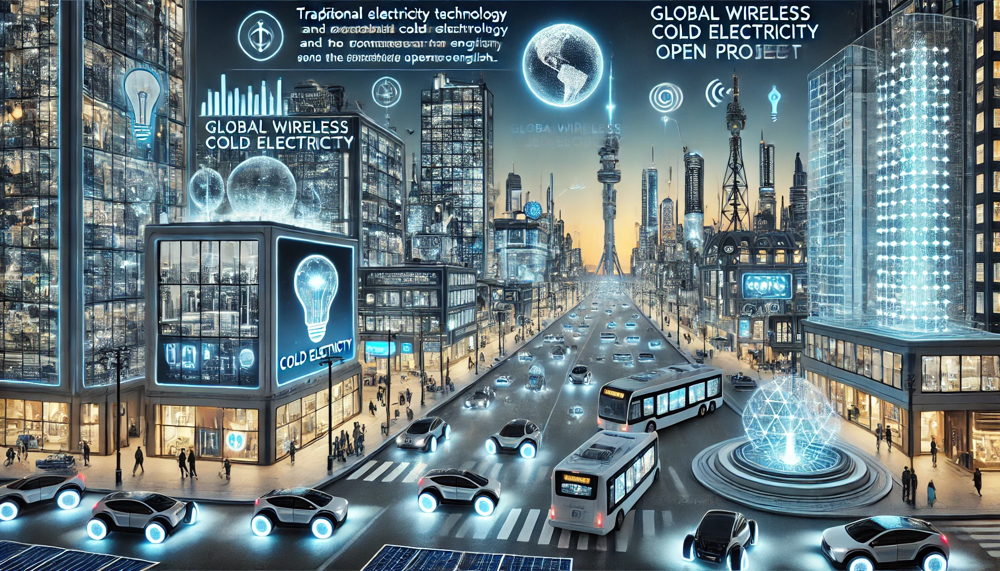
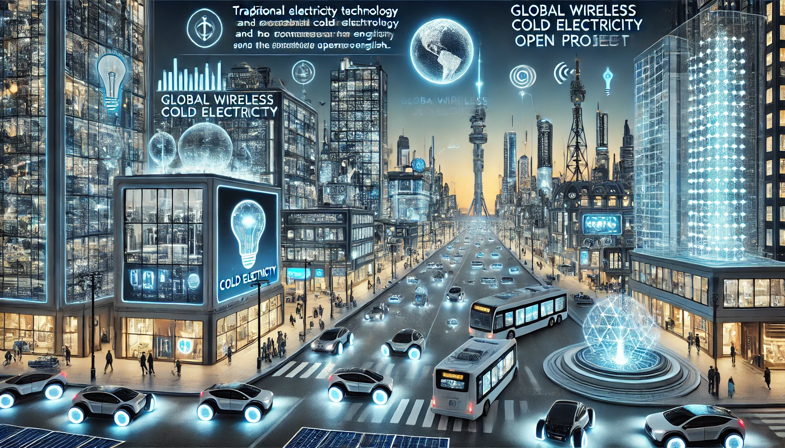

 Image generated by AI.
Image generated by AI.
|
"Let the future tell the truth and evaluate each one according to his work and accomplishments. The present is theirs; the future, for which I have really worked, is mine." -Nikola Tesla |
Home
Welcome
to the Cold Electricity Open Project, an open project dedicated to
promoting cold electricity technology and its applications.
Future Vision of Cold Electricity Open Project
About Cold Electricity
English: Click to view
Project Overview
The goal of the Cold Electricity Open Project is to bring together all
ordinary people and experts who understand cold electricity and its
characteristics, find ways to utilize cold electricity, create
self-powered cold electricity devices, popularize cold electricity
technology and use it to penetrate into production and life. and many
other fields. It allows everyone to use cold electricity anywhere as a
endless source of clean energy and replace existing traditional energy
sources and existing electricity, including traditional renewable
energy sources such as solar power and wind power, to improve living
standards. The project also has a goal to use cold electricity
energy storage devices, cold electricity/radiant energy/scalar wave
transmitters and receivers to establish a global wireless cold
electricity transmission network and enable all electrical
appliances to work with cold electricity.
Cold Electricity Device Guide
Exploring.
Cold Electricity Open
Subprojects
| #
|
Subprojects
|
Progress
|
Progress Details
|
| 1
|
Self-powered Cold
Electricity Generators |
In Progress
|
Designing
|
| 2
|
Global
Wireless Cold Electricity Transmission Network
|
Not Started |
Unassisted |
| 3
|
Cold
Electricity Levitation Vehicle
|
Not Started |
Unassisted |
| 4
|
Adaptation of Cold
Electricity and Traditional Electrical Appliances
|
Not Started |
Unassisted |
|
|
|
|
Join, Support &
Investment
The creator of the project believed that cold electricity would change
the world if it were widely used, and wanted to make some self-powered
cold electricity generators, transmitters, and receivers and distribute
them for free as part of the project, but had no idea how to make
them,so the the project needs support and help from more people. If you
wish to join, support or invest in the Cold Electricity Open Project,
please contact us. We welcome all forms of collaboration.
Downloads
Download Center
Contact Us
Discord: https://discord.gg/z6kVqKEUyg
Facebook: Sorry, due to unknown issues, the account was disabled by Facebook after it
was created. Cold Electricity Open Project currently does not have
a Facebook group.
Google Chat Space: https://chat.google.com/room/AAAAJq1iMTs?cls=7
Reddit: https://www.reddit.com/r/ColdElectricityOpProj/
X account: @OpenCold2818
https://x.com/OpenCold2818
DingTalk group number: 96965021007
Email: coldelecopenproj@gmail.com
Cold Electricity Open Project